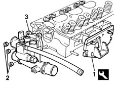

1088C32 thermostat unit - r + r with cylinder head removed
- Path
- Procedures > 10 ENGINE UNIT > 1088 ENGINE COOLING > 1088C water pump and thermostat > 1088C32 thermostat unit - r + r with cylinder head removed
- Kind
- repair procedure (removal / refitting; the operation number is the code)
- Applies to
- engines: 1.6 16v; all production periods
- Interactive page
- https://sloeber94.github.io/elrnDB-fMltpl/en/#/2892352
Applies to: engines: 1.6 16v; all production periods
 Removing
Removing
 Refitting
Refitting1. Position the cylinder head in the vice, supporting it with a suitable tool.
 | Name | Country |
|---|---|---|
1 | Support | 1.860.470.000 |
2. Unscrew the retaining nuts.
3. Remove the thermostat from the cylinder head.

Applies to: engines: 1.6 16v; all production periods
Refitting
RemovingPositin the thermostat in the housing in the cylinder head, having replaced the seal first.
Tighten the retaining nuts to torque.
 | Fastening | Component | Ø | Value (daNm) |
|---|---|---|---|---|
- | Nut | THERMOSTAT | M8 | 2.5 |
Remove the cylinder head from the vice and then remove the supporting tool from the cylinder head.
| Name | Country |
|---|---|---|
- | Support | 1.860.470.000 |